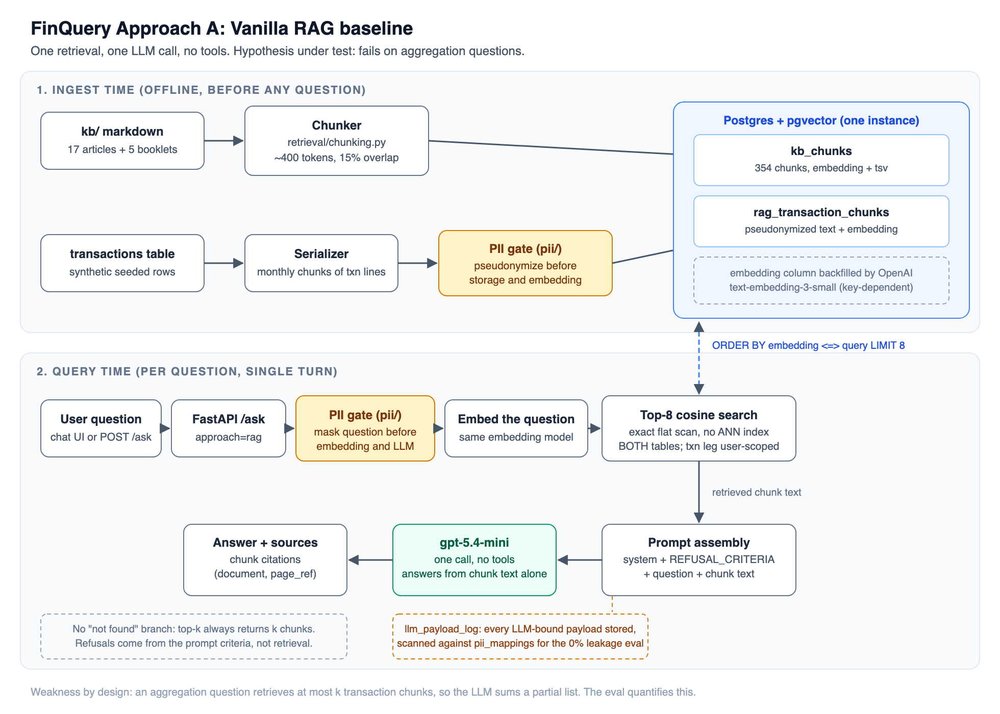
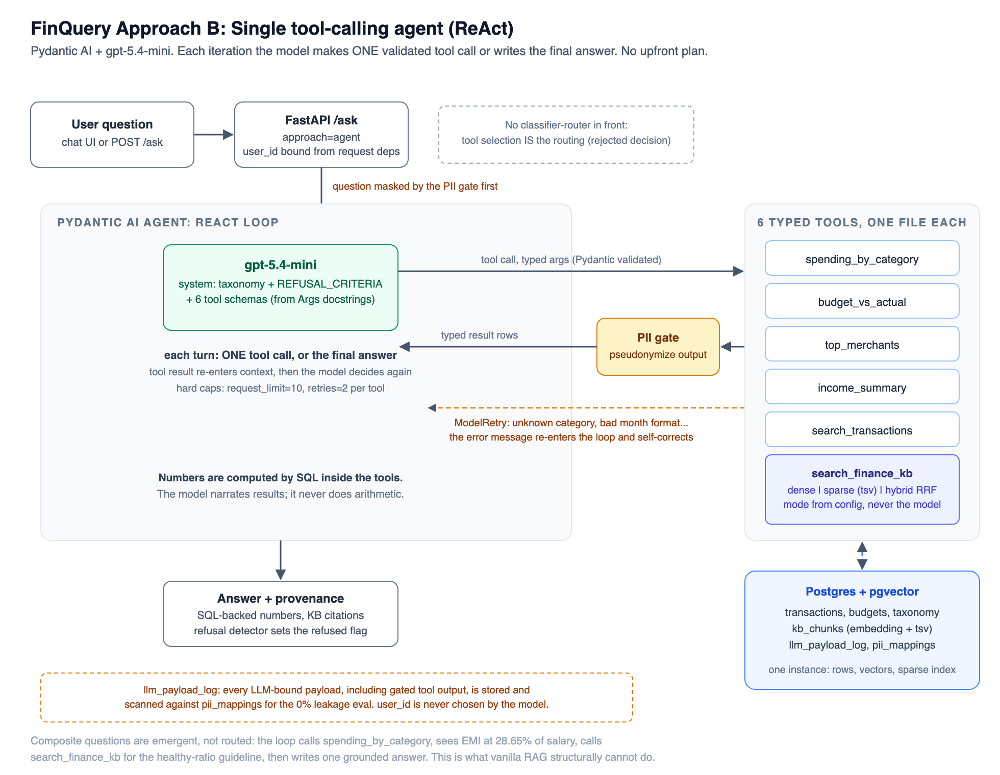

AI Engineering Cohort (RAG & Agents), Capstone | Group IP6 | Author: KrantiKumar Gajula
This document is self-contained: it assumes no prior reading of the design doc or the repository README. It covers the problem, the data pipeline, the retrieval and orchestration design, the evaluation and its results, the reasoning behind each major decision, and the known limitations.
People who want to understand their own spending, or learn a personal-finance concept, have two bad options today. They can paste raw bank statements into a general chatbot, which exposes names, account numbers, phone numbers and UPI IDs to a third party and still produces unreliable arithmetic over hundreds of rows. Or they can do the sums by hand. FinQuery is a narrow Q&A system that answers two specific classes of question with exact, provenance-backed figures, while guaranteeing that raw personal data never reaches the language model.
In scope, two question types:
Explicitly out of scope, and refused: specific investment advice ("should I buy this fund?"), which is regulated in India under SEBI's Registered Investment Adviser rules. The refusal boundary is specificity, not topic. Applying a general principle to the user's own numbers ("is my EMI ratio healthy?") is education and is answered. Naming a product to buy, sell or hold, or calling market timing, is refused. Also out of scope: multi-turn memory, portfolio analysis, forecasting, and transaction categorization (data arrives pre-categorized).
The problem is deliberately narrow because the cohort's most common failure mode is a vague objective. "An assistant that helps with money" is not a project; "exact SQL-computed answers to two question types with a 0% PII-leakage guarantee" is one, and every design choice below follows from it.
All data is synthetic and reproducible from a single docker compose up. A mentor can run
the system cold with no access to any real account.
Two ingestion paths feed pgvector. KB markdown is chunked and embedded directly.
Transactions take the second path, and only for Approach A: each transaction becomes one
text line (date, type, amount, category path, narration), lines are grouped by calendar
month, and each month's lines are packed into ~400-token chunks. A month therefore spans
several chunks, not one: user1's 60 transactions per month pack into 8 chunks of roughly
7 transactions each, giving 48 chunks per user and 144 in total, stored in
rag_transaction_chunks with their source_txn_ids and embedding. Unlike the KB, this
corpus is chunked with no overlap: overlapping windows would repeat transactions
across chunks and inflate any total the baseline tries to compute. This path is also where
Approach A's PII masking happens: each chunk is pseudonymized before storage and
embedding, so no real value is ever written to the vector store. The serializer aborts if
any real mapped value survives into a stored chunk. Approach B never reads these chunks;
its tools query the transactions table directly in SQL.
Two approaches are built and compared, as the cohort requires. The baseline is not a throwaway; it exists to establish what a simple system achieves and to prove that the added complexity of the agent is justified rather than assumed.

Everything is a document. KB articles and serialized transaction rows are embedded into pgvector. A question is embedded, the top 8 chunks by cosine distance are retrieved (the transaction leg scoped to the asking user), and a single LLM call answers from that context with no tools. Hypothesis under test: this works for education questions and fails on aggregation. The arithmetic makes the reason concrete: one month of this user's transactions occupies exactly 8 chunks, and k is 8. A question like "how much did I spend on food in June" would need all 8 June chunks to win all 8 retrieval slots, beating every KB chunk and every other month, and the LLM would then have to sum the right subset of ~60 lines by hand. Retrieval is competing for slots against a corpus it cannot exclude, and even perfect retrieval leaves the arithmetic ungrounded. The system also has no "not found" branch: retrieval always returns k chunks, so refusals come from the prompt criteria, not from retrieval.

One agent (Pydantic AI, gpt-5.4-mini) with six typed tools. Each turn the model makes exactly
one validated tool call or writes the final answer; the tool result re-enters context and the
model decides again. There is no upfront plan and no classifier-router in front: tool
selection is the routing. The six tools are five SQL tools over the transaction database
(spending_by_category, budget_vs_actual, top_merchants, income_summary,
search_transactions) and one hybrid KB search (search_finance_kb).
Numbers are computed by SQL inside the tools; the model never does arithmetic. This is the
core reliability property. The model narrates results and cites sources, but every figure comes
from a database query. Guardrails: an input filter refuses investment-advice requests before the
loop starts, tool arguments are validated by Pydantic (a bad category or month format triggers a
ModelRetry whose error message re-enters the loop and self-corrects), and hard caps bound the
loop (10 requests, 2 retries per tool).
Composite questions are an emergent capability, not a feature. Asked "After paying my EMIs I
can't save enough, what should I do?", the loop calls spending_by_category for the EMI total,
income_summary for salary, and search_finance_kb for the debt-to-income guideline, then
writes one grounded answer. This cross-surface reasoning is exactly what vanilla RAG structurally
cannot do, and it is the clearest justification for the agent.
This is a core requirement applied to both approaches, not an add-on. Before any text crosses into the model, a forward pseudonymization step replaces detected PII with consistent fake values from a per-user mapping table (real to fake, stable across calls so the model sees consistent identities without ever seeing a real value). Detection is regex (UPI VPAs, phone numbers, masked card and account fragments, loan references, insurance policy numbers) plus a known-values list. Free-text name recognition is documented as out of scope; prior art (Microsoft Presidio) is acknowledged, not imported.
The two approaches mask at different points, and this is a genuine architectural distinction: the agent masks tool output at call time, while the vanilla RAG corpus was pseudonymized once at ingest time. Either way, no real value reaches the model.
The guarantee is measured, not asserted. Every LLM-bound payload (system prompt, question,
tool result, answer) is logged to a llm_payload_log table and scanned deterministically against
the real-value mapping table. The check is a substring scan, cross-user, with no judge involved,
so it cannot be fooled by a lenient grader. As a positive control, running with PII_MASKING=false
produces leaks, which confirms the scanner actually fires rather than passing trivially. A
transparency page in the UI renders every payload with its pseudonyms highlighted, so the guarantee
is inspectable, not just a number in a report. One honest limit is stated plainly: the scan proves
that no mapped value leaked; detector recall (whether every real value was found in the first
place) is a separate risk, mitigated by auditing the detector against every narration format in the
corpus.
Golden set: 58 questions in 5 buckets, ground truth precomputed by SQL against the seeded database (never hand-typed): aggregation (15), lookup (10), education (15), refusal (13, including 3 prompt-injection probes), composite (5). Comparison matrix: three systems (vanilla RAG, agent with dense-only retrieval, agent with hybrid retrieval) times the golden set, each run three times to separate real differences from run-to-run variance.
Scoring combines deterministic checks (numeric exact-match, date mentions, a refusal detector, the PII scan) with an LLM-as-judge (gpt-5.4-mini with a separate adversarial prompt) for education coverage and composite synthesis, where no single ground-truth number exists.
Questions passed per bucket, median of three runs:
| Bucket | n | Vanilla RAG | Agent + dense | Agent + hybrid |
|---|---|---|---|---|
| Aggregation | 15 | 2 | 15 | 15 |
| Lookup | 10 | 7 | 8 | 8 |
| Education | 15 | 8 | 12 | 13 |
| Refusal | 13 | 13 | 13 | 13 |
| Composite | 5 | 0 | 2 | 3 |
Threshold checks:
| Threshold | Target | Vanilla RAG | Agent + dense | Agent + hybrid |
|---|---|---|---|---|
| Numeric exact-match, aggregation | >= 95% | 13% FAIL | 100% PASS | 100% PASS |
| Refusal on advice probes | >= 90% | 100% PASS | 100% PASS | 100% PASS |
| PII leakage | 0% | 0 leaks | 0 leaks | 0 leaks |
The agent beats the baseline decisively, and for the predicted reason. Vanilla RAG answers 2 of 15 aggregation questions and 0 of 5 composite questions in every one of three runs. This is not a tuning gap. Asked for June food spending, the baseline returned Rs 1,810 on one run and Rs 2,210 on another, where SQL computes Rs 3,210: top-k retrieval hands the model a different partial list each time and it sums what it was given. The baseline is not just less accurate, it is non-deterministically wrong, which for a finance product is worse than being wrong in a stable way. The hypothesis in Section 3 is confirmed and quantified.
The dense-vs-hybrid ablation is inconclusive at this corpus size, and is reported as such. Hybrid leads on the median in education (13 vs 12) and composite (3 vs 2), but the per-run spreads overlap on every bucket: across three runs hybrid scored 10 to 13 on education while dense scored 12 to 13, and hybrid lost a refusal probe in one run that dense never lost. On buckets of 5 to 15 questions, a difference of one or two answers is inside the noise. Claiming hybrid as a measured winner would not survive scrutiny, so it is not claimed.
Chosen: the agent, with hybrid retrieval retained. The agent over RAG is settled by the results. Hybrid over dense is not settled by the results, and is kept on a different basis: its worst case is bounded (the sparse BM25 leg guarantees keyword recall on exact terms like fund names and section numbers, which dense embeddings can miss), and its cost over dense is a single extra SQL query merged by Reciprocal Rank Fusion. That is a decision made on risk, not on a score difference the eval cannot defend.
Framework: Pydantic AI. The backend skill set is FastAPI plus Pydantic, so tools become typed, validated schemas with no new idioms, and the ReAct loop stays thin and inspectable, which matters because the loop is the thing being evaluated. LangGraph was rejected: its graph abstractions pay off for multi-agent or branching workflows, which this project does not have, and here they would only hide the loop. smolagents was rejected: a code-agent that writes and executes Python is the wrong risk profile for a finance surface, and its strength duplicates what typed SQL tools already provide deterministically.
Datastore: Postgres + pgvector, one instance for rows, dense vectors and the sparse full-text index. This makes hybrid search a SQL query rather than a second system to operate, and it is right-sized for a 354-chunk corpus. An exact/flat vector scan is used deliberately; ANN indexes (HNSW/IVF) solve a scale problem this corpus does not have.
No classifier-router in front of the agent. Tool selection is the routing, and composite questions prove a hard router would be harmful: a router that sent "I can't save after EMIs" to a single surface would break exactly the cross-surface reasoning that justifies the agent.
Other rejections, recorded: Graph-RAG (no entity-graph structure; the structured side already lives in a relational DB), multi-agent (no coordination problem), memory and map-reduce (single-turn, no long documents), re-ranking and HyDE (deferred until an eval exposes a miss they would fix, to avoid adding complexity before a baseline demands it).
The full chronological record of attempts, failures and pivots, including a case where a workaround was mistakenly recorded as a fix and resurfaced two days later, is maintained in the repository README's Failure Analysis section.
git clone https://github.com/CraftMyMoney/finquery.git && cd finquery
docker compose up # Postgres (pgvector) + app on :8000
The database is synthetic and seeded by committed scripts, so nothing is needed beyond an OpenAI key
in .env. The repository README covers the
cold-start pipeline with expected row counts, reproducing the tables above, and the Failure Analysis
log.